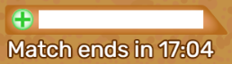
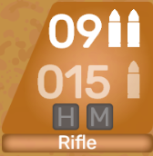

HOW TO PLAY
ShootThis is an HTML5 battle royale that is played in the top view of a 2D plane. You need to have an account to play.
ABOUT THE SERVER SELECTION SCREEN
It's a screen that you cannot skip and it appears immediately after you log in successfully. You need to pick one of the servers listed and it's in your best interest to choose the one with the least ping time so that you are able to respond fast to interactions with other players during a match.

ABOUT THE LOBBY
The lobby is basically the main menu of ShootThis. From it, you can access your stats, personalize your account and control your gaming experience. There are 3 sections: experience controls, player customization and match joining controls.
EXPERIENCE CONTROLS
These are located on the bottom left of your screen and consists of the following: a button to control the music, a button to control the sound and a button to control the game quality/performance (Renderer).

- Mute/Play Music - this option mutes or unmutes all music game-wide, respectively. The default of that button is whatever you chose at the "Enable Audio" prompt when you first logged in. The only way to toggle music after you choose the setting at that prompt is to click the button.
- Mute/Allow Sounds - mutes/unmutes all audio from the game for the current session (until you refresh the page), which means that no sound or music will be played, anywhere. The way to toggle audio again is to click that button or refresh the page.
- Renderer - this toggles between WebGL and CANVAS mode. WebGL has more extras when displaying graphics and is supported by most modern browsers, however, it can be very resource-demanding, especially on older machines. CANVAS is the more lightweight solution, but the effects may not be as amazing as WebGL. The default value is WebGL (if your browser supports it), otherwise CANVAS will be chosen by default. The only way to change between the rendering engines is to use that toggle. Note: switch to CANVAS if your machine has struggles during a match. It might work a lot better.
PLAYER CUSTOMIZATION
This section is on the right of the experience controls. It shows your currently chosen character (Elenuit by default), as well as some useful stats about your overall ShootThis experience and details about the last ShootThis match (if you have played one). To change your character, simply use the "Change Character" button. Changing your character is rather a cosmetic change, it does not change your hitbox during a match, for example. In other words, the character you pick does not really matter.

MATCH JOINING CONTROLS
They are on the right of the player customization section and underneath the "How to Play" button. Using the "Join Match" button you can join a queue for a match. Underneath it, you can see the current status of the queue. Whenever the current queue is created, a host is automatically assigned. The host is allowed to start the match only when there are enough players to meet the minimum requirement of 3 players. If a lot of players join the queue, it's better to wait for the system to automatically start a full match. If you want the host to be reassigned, you need to click "Vote: Change Host" and if at least 2/3rds of all players in the queue vote the system will assign the host role to someone else. Voting to change the host is useful when everyone is tired of waiting and they want a smaller match and the current host is unwilling to start one.

ABOUT THE MATCHES
Right after a match is started by you or the host in the lobby, the server checks if everything is okay to start one and if so, it will show a "Match starting in..." screen. After the countdown is over, it might hang on saying "Match starting in 1" or "Waiting for response from server". It's nothing to worry about, your browser is just processing the data it has received. If it just happens that it can't load the game (because the memory is not enough, for example) it will let you know and disconnect you from the game.
After the match starts, everyone is spawned at random positions. There's different obstacles and collectibles spawned every time, the only thing that maintains its position in every match are the walls - the bounds of the match field. You always see your character centered in the game bounds.
GAMEPLAY
The aim of you taking part in the match is eliminating all other opponents and being the last one standing, using all the cover and collectible items available. Just like any other battle royale, you start with minimal equipment - your gun and its default magazine loaded. You need to explore the map to find other players to fight, ammo, heals and other collectibles that can turn a gunfight in your favor.
The overall concept is simple: to eliminate other enemies you shoot at them (it affects them only if it hits their hitbox, that's the circle around them) and watch out for anyone else shooting at you. When the time assigned for the match expires, everyone is killed by ShootThis (you can read more about that below) and a winner is chosen. However, try doing your best to kill everyone else because when the game kills everyone... it may turn out that you are not the champion.
MATCH INTERFACE
That's the health bar and a timer on the top right. Watch out for that health; if it goes down to zero, you are dead. The timer indicates how much time is left before the game eliminates people on its own. However, unlike other battle royale games, there is no zone here - everyone is inside a safe zone until the timer stops counting. After that, everyone is in an unsafe zone, gets insane amount of damage dealt by the server so that there is no way to stay alive and the one with the most health left is crowned as champion of the match.
In the top right corner you can see how many kills you have. When you get a kill, you get to know about it by a small popup in the bottom center, showing the name of the player you killed. When you have no kills, this icon is invisible and the top right corner is empty.
In the bottom left corner appear some game-related hints. Whenever you get close to a spawnable, the small box appears there, telling you what you can pick up. If you try to pick up a health orb, for example, and you have full health - it will tell you that you don't need to heal. It also shows how much time an action takes when you perform it (healing, for instance).
In the bottom right corner you can see info about the weapon you have equipped. Currently, there is only one weapon available: single-fire Rifle. On the top of this menu you can see the loaded ammo, under that is the other ammo that is available to be loaded when you need to and underneath the ammo stats you have the hopup (H) and mag (M) slots.
HOPUPS
These change the way your gun does during a gunfight. You can only have one hopup equipped at a time. They are somewhat rare, so you gotta watch out for them and make sure to grab your preferred one before anyone else does. Be careful: whenever you pick a hopup up, it is automatically attached and you drop your previous hopup if you had one.
- Piercer - bigger damage per shot (an increase from 12 to 15);
- Speedfire - bigger fire rate, faster reload times.
MAGS
These change the capacity of the loaded ammo of your gun. The default magazine of Rifle is 9 bullets.
- Rifle Mag 1 - loaded ammo capacity of 10;
- Rifle Mag 2 - loaded ammo capacity of 11;
- Rifle Mag 3 - loaded ammo capacity of 12.
MATCH CONTROLS
These are the commands that the game can receive from your mouse and keyboard, only when it is focused. Basically, if the game does not respond to controls and they work fine everywhere else in your machine, you probably need to click inside the game to focus on it again.
- Mouse pointer - this controls the rotation of the player.
- Mouse left button - shoots your gun if you have ammo loaded in it (and you are not healing or reloading at that moment).
- "W" key on the keyboard - moves you forwards, taking into consideration your rotation.
- "S" key on the keyboard - moves you backwards, taking into consideration your rotation.
- "E" key on the keyboard - picks up the nearest item (that's inside the circle around your player). You can see what the item is in your bottom left corner.
- "R" key on the keyboard - reloads your gun (if you have enough ammo).
- "Esc" key on the keyboard - shows the options menu (quitting the match (returning to lobby), muting music & sounds).
Last Updated: September 15, 2020